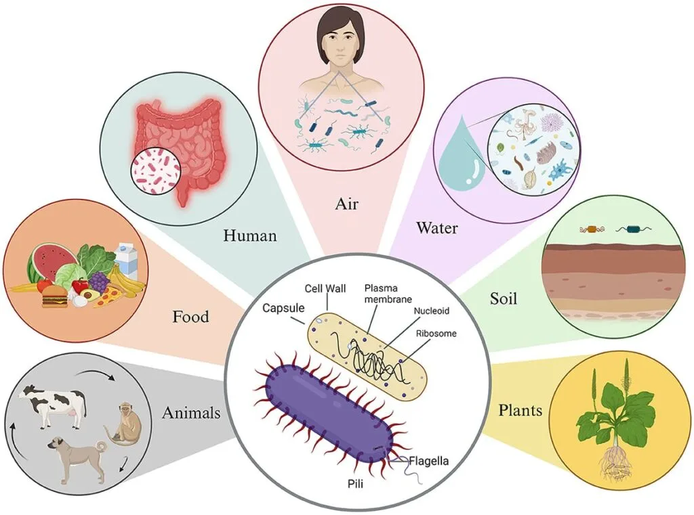

Expanded Nursing Uganda Explanation
Pathogenic microorganisms should be understood beyond a short definition. Link the concept to patient history, focused assessment, common risks, nursing priorities, documentation and evaluation of outcomes.
Contents — 43 sections (tap to expand)
01 Overview
This module introduces students to the concept of Microbiology and its importance to medical science. It covers the classification of microorganisms, their characteristics, their role in spreading infection and disease, simple microbial laboratory tests, and concepts of immunity and immunization.
02 What is Microbiology?
Microbiology is the scientific study of microorganisms (or microbes), which are living organisms that are too small to be seen with the naked eye. These organisms are typically less than 0.1mm in dimension and can only be viewed using a microscope.
The field includes several branches, each focusing on a specific type of microorganism:
- Bacteriology: The study of bacteria.
- Virology: The study of viruses.
- Mycology: The study of fungi.
- Protozoology: The study of protozoa.
- Phycology: The study of algae.
- Parasitology: The study of parasites, which includes pathogenic protozoa and helminths (worms).
- Immunology: The study of the immune system's response to infection.
03 The Importance of Microbiology for Nurses and Midwives in Uganda
A strong understanding of microbiology is essential for safe and effective nursing and midwifery practice. Communicable (infectious) diseases are a major cause of illness and death in Uganda, with malaria, HIV/AIDS, and tuberculosis being major public health concerns.
This knowledge helps a nurse or midwife to:
- Prevent and Control Infections: Understand how pathogenic organisms enter the body, spread, and cause disease, which is the foundation for infection prevention and control (IPC) . This includes practices like hand hygiene, sterilization, and proper use of personal protective equipment (PPE).
- Understand Disease Processes: Learn how specific microbes cause the signs and symptoms seen in patients. For example, understanding that Plasmodium falciparum infects red blood cells helps explain the fever cycles and anemia in malaria patients.
- Ensure Proper Specimen Collection: Learn the correct techniques for collecting, handling, and transporting specimens (like blood, sputum, or swabs) for laboratory examination to ensure accurate diagnosis.
- Interpret Laboratory Reports: Understand the meaning of lab results (e.g., a "Gram-positive" result or "acid-fast bacilli seen") to contribute effectively to patient care.
- Administer Antimicrobials Correctly: Know why certain drugs (like antibiotics, antivirals, or antifungals) are used for specific infections and understand the growing danger of antimicrobial resistance (AMR).
- Promote Public Health: Educate patients, families, and communities on disease prevention, sanitation, safe drinking water, and the importance of immunisation. This is crucial for controlling outbreaks of diseases like cholera and measles.
- Manage Maternal and Newborn Health: A key role for midwives is to prevent and manage infections specific to pregnancy and childbirth, such as puerperal sepsis (childbed fever), neonatal tetanus, and infections in the newborn.
04 A Brief History of Microbiology
- Antonie van Leeuwenhoek (1632-1723): A Dutch scientist often called the "Father of Microbiology." Using a microscope he designed, he was the first to observe and describe microorganisms, which he called "animalcules." He notably discovered protozoa like Giardia lamblia and was the first to describe red blood cells.
- Edward Jenner (1749-1823): An English physician who pioneered the concept of vaccination. He observed that milkmaids who had contracted the mild disease cowpox were immune to the deadly smallpox. In 1796, he famously inoculated a boy with material from a cowpox lesion, who then became resistant to smallpox. This laid the foundation for modern immunology.
- Ignaz Semmelweis (1818-1865): A Hungarian obstetrician who discovered that childbed fever (puerperal sepsis) was contagious and could be drastically reduced by hand disinfection. He insisted doctors wash their hands with a chlorinated lime solution after performing autopsies, which cut maternal mortality in his ward by 90%. His ideas were tragically ridiculed by his colleagues at the time.
- Louis Pasteur (1822-1895): A French chemist and microbiologist whose work was revolutionary. He demonstrated that microbes were responsible for fermentation and food spoilage.
- He developed pasteurization, a process of heating liquids to kill most bacteria and molds.
- He definitively disproved the theory of spontaneous generation.
- His work led to the "Germ Theory of Disease," which proved that many diseases are caused by microorganisms.
- He developed vaccines for anthrax and rabies.
- Joseph Lister (1827-1912): An English surgeon regarded as the "Founder of Antiseptic Surgery." Applying Pasteur's germ theory, he used carbolic acid (phenol) to disinfect surgical instruments, the patient's skin, and the air, dramatically reducing post-operative infections and death rates.
- Robert Koch (1843-1910): A German physician who is considered one of the founders of modern bacteriology. He was the first to grow bacteria on a solid culture medium (agar).
- He identified the specific bacteria that caused anthrax, tuberculosis ( Mycobacterium tuberculosis ), and cholera ( Vibrio cholerae ).
- He developed Koch's Postulates , a set of criteria to establish a causal relationship between a specific microbe and a specific disease.
- Alexander Fleming (1881-1955): A Scottish physician who, in 1928, discovered the first antibiotic. He observed that a mold, Penicillium notatum , had contaminated one of his bacterial cultures and was killing the bacteria around it. He named the active substance penicillin , paving the way for the age of antibiotics.
05 The Five Kingdom System
- Monera: Unicellular, prokaryotic organisms (e.g., bacteria).
- Protista: Mostly unicellular, eukaryotic organisms (e.g., amoeba, paramecium).
- Fungi: Eukaryotic, absorb nutrients (e.g., yeasts, molds).
- Plantae: Multicellular, eukaryotic, photosynthetic organisms.
- Animalia: Multicellular, eukaryotic organisms that ingest food.
06 Prokaryotes vs. Eukaryotes
All living organisms are classified into two broad categories based on their cellular structure: prokaryotes and eukaryotes.
- Prokaryotes: These are unicellular organisms that lack a true, membrane-bound nucleus . Their genetic material (a single, circular chromosome) is located in a region of the cytoplasm called the nucleoid . They also lack other membrane-bound organelles like mitochondria. Bacteria are prokaryotes.
- Eukaryotes: These are organisms whose cells contain a true nucleus enclosed by a nuclear membrane. Their genetic material consists of multiple, linear chromosomes. They also have various other membrane-bound organelles. Fungi, protozoa, plants, and animals (including humans) are all eukaryotes.
07 Key Differences Between Prokaryotic and Eukaryotic Cells
- Feature Prokaryotes Eukaryotes
- Nucleus Absent; genetic material is in the nucleoid. Present; enclosed by a nuclear membrane.
- Organelles No membrane-bound organelles. Membrane-bound organelles present (mitochondria, etc.).
- Chromosome Single, circular DNA molecule. Multiple, linear DNA molecules.
- Cell Wall Usually present; complex, contains peptidoglycan (in bacteria). Present in fungi (chitin) and plants (cellulose); absent in animal and protozoan cells.
- Ribosomes Smaller (70S). Larger (80S).
- Reproduction Asexual (Binary Fission). Asexual (Mitosis) or Sexual (Meiosis).
- Size Typically small (0.5-5.0 µm). Typically larger (10-100 µm).
08 Definition of key terms
- Pathogenicity: The ability of a pathogenic microorganism to cause disease.
- Virulence: A measure of a microbe’s ability to cause disease; its degree of pathogenicity .
09 Microorganisms can be classified as:
- Non-pathogens: Microorganisms which do not cause disease.
- Pathogens: Microorganisms capable of causing disease.
Pathogens are further divided into two groups:
10 Opportunistic Pathogens
These are microorganisms capable of causing disease only when the host's defenses are compromised . The majority of opportunistic pathogens are part of the normal flora.
- Pathogen Normal Site Opportunistic Disease
- Candida albicans Vagina and GIT Oral and vaginal candidiasis, intestinal candidiasis
- Escherichia coli (E.coli) Colon Urinary tract infection (UTI)
- Clostridium difficile Gut Pseudomembranous colitis (often following antibiotic therapy)
- Staphylococcus aureus Skin Skin and soft tissue infections (e.g., in a wound)
- Pneumocystis jirovecii Airways (nose, throat) Pneumonia (especially in immunocompromised, like HIV/AIDS patients)
11 Primary Pathogens
These are microorganisms capable of causing disease even when the host's defense mechanisms are intact (i.e., in a healthy person). Primary pathogens have virulence factors that allow them to overcome host defenses.
- Pathogen Disease What is Affected
- Neisseria gonorrhoeae Gonorrhea Humans
- Bacillus anthracis Anthrax Humans and animals
- Salmonella typhi Typhoid Fever Humans
12 General Characteristics and Structure of Bacteria
Bacteria are unicellular prokaryotic microorganisms. A typical bacterial cell consists of the following structures:
13 Cell Envelope (Outer Layers):
- Capsule (or Slime Layer): An outer, viscous layer, usually made of polysaccharides. The capsule helps bacteria adhere to surfaces (like host cells), protects them from being engulfed by immune cells (phagocytosis), and prevents dehydration.
- Cell Wall: A rigid layer outside the plasma membrane, primarily composed of peptidoglycan . The cell wall provides structural support, maintains the characteristic shape of the bacterium, and protects it from osmotic lysis (bursting). It is the basis for Gram staining.
- Plasma (Cytoplasmic) Membrane: A phospholipid bilayer that encloses the cytoplasm. It acts as a selective barrier, controlling the passage of substances into and out of the cell. It is also the site of energy production and synthesis of cell wall components.
14 Internal Structures:
The cytoplasm is the gel-like substance inside the plasma membrane, containing water, enzymes, nutrients, and the cell's internal structures.
- Nucleoid: The region where the single, coiled, circular chromosome (DNA) is located. There is no nuclear membrane.
- Ribosomes: Sites of protein synthesis. They are smaller (70S) than those in eukaryotes.
- Plasmids: Small, circular, extrachromosomal pieces of DNA that replicate independently. They often carry genes for antibiotic resistance and toxin production.
- Inclusion Bodies: Granules used for storing nutrients like starch, glycogen, or phosphate.
15 Appendages (External Structures):
- Flagella (singular: flagellum): Long, whip-like filaments that enable movement (motility).
- Pili (singular: pilus) or Fimbriae: Short, hair-like appendages on the surface. They are used for attachment to host cells and for conjugation (transfer of genetic material between bacteria).
16 3.2. Classification of Bacteria
Medically important bacteria are classified based on several criteria:
17 1. Morphology (Shape and Arrangement):
- Cocci (Spherical): Diplococci: in pairs (e.g., Neisseria gonorrhoeae)
- Streptococci: in chains (e.g., Streptococcus pyogenes)
- Staphylococci: in grape-like clusters (e.g., Staphylococcus aureus)
- Bacilli (Rod-shaped): Single bacillus
- Diplobacilli: in pairs
- Streptobacilli: in chains
- Coccobacilli: short, oval rods (e.g., Bordetella pertussis)
- Spirilla (Spiral-shaped): Vibrio: comma-shaped (e.g., Vibrio cholerae)
- Spirillum: rigid, spiral shape
- Spirochete: flexible, corkscrew shape (e.g., Treponema pallidum)
18 2. Gram Staining:
This is the most important differential stain in bacteriology, dividing bacteria into two main groups.
- Gram-Positive Bacteria: Have a thick peptidoglycan layer in their cell wall, which retains the primary crystal violet stain and appears purple/violet .
- Gram-Negative Bacteria: Have a thin peptidoglycan layer and an outer lipid membrane. They do not retain the primary stain and are counterstained by safranin, appearing pink/red .
- Primary Stain (Crystal Violet): All cells stain purple.
- Mordant (Gram's Iodine): Forms a large crystal violet-iodine (CV-I) complex within the cells.
- Decolorisation (Alcohol/Acetone): This is the key differential step. In Gram-positive cells, the alcohol dehydrates the thick peptidoglycan wall, shrinking the pores and trapping the CV-I complex inside. The cell remains purple.
- In Gram-negative cells, the alcohol dissolves the outer membrane and the thin peptidoglycan layer cannot retain the CV-I complex. The cell becomes colourless.
- Counterstain (Safranin): Stains the colourless Gram-negative cells pink/red. Gram-positive cells remain purple.
- Prepare a smear and heat-fix it.
- Apply crystal violet solution (leave it for one minute).
- Wash the slide with water.
- Apply iodine solution (leave it for one minute).
- Wash the slide with water.
- Decolorize with acetone (for 5 seconds only).
- Now gram-positive bacteria are still visible (violet colored) but gram-negative bacteria are no longer visible.
- Wash immediately in water.
- Apply safranin (the counter stain) (for 30 seconds).
- Wash the slide with water.
- Blot and dry in air.
19 3. Ziehl-Neelsen (Acid-Fast) Staining:
This stain is used for bacteria with a waxy, lipid-rich cell wall (containing mycolic acid) that resists Gram staining, primarily Mycobacterium species.
- Primary Stain (Carbolfuchsin): The smear is flooded with the red stain and heated (steamed). The heat helps the stain penetrate the waxy mycolic acid layer. All cells appear red.
- Decolorisation (Acid-Alcohol): This is the differential step. Acid-Fast Bacilli (AFB) have a high concentration of mycolic acid, which resists decolorisation by the acid-alcohol and they remain red .
- Non-acid-fast cells lack this waxy layer, are easily decolourised, and become colourless.
- Counterstain (Methylene Blue): Stains the colourless background cells and non-acid-fast organisms blue .
- Result: Acid-fast bacteria (like M. tuberculosis ) appear red against a blue background.
- Prepare a smear and heat-fix it.
- Cover the smear with a piece of blotting paper (absorbent paper).
- Flood with carbol fuchsin.
- Steam for 5 minutes by heating slide on a rack over a boiling water bath. Keep adding stain to avoid drying out the slide.
- Allow the slide to cool.
- Wash with water.
- Decolorize with acid-alcohol adding it drop by drop until the dye no longer runs off from the slide.
- Wash with water.
- Apply counterstain (methylene blue) for one minute.
- Wash with water.
- Blot and dry in air.
On examination with light microscope acid-fast bacteria will appear red; non-acidfast will appear blue.
20 4. Oxygen Requirements:
- Obligate Aerobes: Require oxygen to grow (e.g., Mycobacterium tuberculosis ).
- Facultative Anaerobes: Can grow with or without oxygen (most pathogens, e.g., E. coli ).
- Obligate Anaerobes: Grow only in the absence of oxygen; oxygen is toxic to them (e.g., Clostridium tetani ).
- Microaerophiles: Require low concentrations of oxygen.
21 Bacterial Growth and Reproduction
- Reproduction: Bacteria reproduce asexually by a process called binary fission , where one cell divides into two identical daughter cells.
- Generation Time (Doubling Time): The time it takes for a bacterial population to double. This varies widely: E. coli: ~20 minutes
- Mycobacterium tuberculosis: ~24 hours
22 The Bacterial Growth Curve:
When bacteria are introduced into a new environment (like a host or culture medium), their population follows a predictable pattern with four phases:
- Lag Phase: A period of adjustment. The bacteria are metabolically active and increasing in size, but there is little to no cell division as they adapt to the new environment.
- Log (Exponential) Phase: The period of most rapid growth. The number of cells increases exponentially as they divide at a constant rate. This is when bacteria are most metabolically active and most susceptible to antibiotics.
- Stationary Phase: The growth rate slows down and becomes equal to the death rate. This is due to the depletion of essential nutrients, accumulation of toxic waste products, and changes in pH.
- Death (Decline) Phase: The death rate exceeds the growth rate, and the number of viable cells decreases.
23 Requirements for Bacterial Growth
- Nutrients: Major Elements: Carbon, Nitrogen, Hydrogen, Phosphorus, Sulphur for building cellular components.
- Trace Elements: Small amounts of metal ions like zinc and iron needed as cofactors for enzymes.
- Temperature: Most pathogenic bacteria are mesophiles , growing best at moderate temperatures (20-40°C), with an optimum around human body temperature (37°C).
- pH: Most pathogens are neutrophils , preferring a neutral pH between 6.5 and 7.5.
24 Endospores
Some bacteria, notably those of the Bacillus and Clostridium genera, can form a highly resistant, dormant structure called an endospore . This is not a form of reproduction. An endospore forms inside the bacterial cell when environmental conditions become unfavorable (e.g., lack of nutrients, extreme heat, drying). Spores can survive for many years and are resistant to heat, desiccation, and chemical disinfectants. When conditions become favorable again, the spore can germinate back into a vegetative (active) cell. This is clinically important for diseases like tetanus ( Clostridium tetani ) and gas gangrene ( Clostridium perfringens ).
25 Chapter 4: Principles of Infectious Disease
Imagine your body as a house, and tiny living things called microbes are trying to get in. Most microbes are harmless, but some, called pathogens, are like uninvited guests who want to cause trouble.
An infectious disease happens when one of these troublemaking microbes gets into your body and starts causing damage. This damage changes how your body works, and you start to notice signs (like a fever) and symptoms (like feeling tired).
Now, not all pathogens are equally strong or equally likely to make you sick. Think of them like different types of troublemakers: some are just more aggressive than others. This aggressiveness or strength of a pathogen is called virulence . It's basically a way to measure how good a microbe is at causing disease.
Here are a couple of examples to help explain virulence:
- Pneumococcus bacteria: Some types of these bacteria have a protective "capsule" around them. These encapsulated ones are much more dangerous (more virulent) than those without the capsule, because the capsule helps them hide from your body's defenses.
- E. coli bacteria: There are many types of E. coli. Some produce a powerful poison called "Shiga-like toxin." These toxin-producing E. coli are much more virulent (cause more severe disease) than E. coli types that don't make this toxin.
So, in a nutshell:
- Infectious diseases are when tiny bad microbes hurt your body.
- A pathogen is a microbe that can cause disease.
- Virulence is how strong or dangerous a pathogen is.
26 Key Terminology
- Pathogen: A microorganism capable of causing disease.
- Pathogenicity: The ability of a microorganism to cause disease.
- Virulence: The degree or measure of a microbe's pathogenicity. Highly virulent pathogens are more likely to cause severe disease.
- Infection: The invasion and multiplication of pathogenic microorganisms in a host's body.
- Aetiology: The study of the cause of a disease.
- Pathogenesis: The mechanism by which a disease develops, from initial infection to the final expression of disease.
- Epidemiology: The study of the distribution (who, where, when) and determinants (why, how) of diseases in populations.
- Endemic: The constant presence of a disease within a specific geographic area or population (e.g., malaria in many parts of Uganda).
- Epidemic: A sudden increase in the number of cases of a disease above what is normally expected in that population in that area.
- Pandemic: An epidemic that has spread over several countries or continents, usually affecting a large number of people (e.g., COVID-19).
27 Host-Microbe Relationships
- Symbiosis: A close and long-term interaction between two different biological species. Commensalism: One organism benefits, and the other is unaffected. For example, some bacteria on our skin.
- Mutualism: Both organisms benefit. For example, E. coli in the gut produces Vitamin K, which is beneficial for the human host.
- Parasitism: One organism (the parasite) benefits at the expense of the other (the host). All pathogenic microbes are parasites.
- Normal Flora (Microbiota): The vast community of microorganisms that live on and inside a healthy person without causing disease. They are found on the skin, in the mouth, gut, and upper respiratory tract. They are beneficial as they can prevent colonization by pathogens.
- Opportunistic Pathogens: Microorganisms that do not normally cause disease in a healthy person but can become pathogenic if the opportunity arises. This can happen when: The host's immune system is weakened (e.g., in HIV/AIDS, malnutrition, or on chemotherapy).
- The microbe gains access to a part of the body where it is not normally found (e.g., E. coli from the gut causing a urinary tract infection).
- The normal flora is disrupted (e.g., antibiotic use killing good bacteria, allowing Candida albicans to cause thrush).
- Primary Pathogens: Microbes that can cause disease in a healthy host with intact immune defences.
28 The Chain of Infection
For an infection to occur and spread, a series of six links must be present and connected. As a nurse or midwife, your goal is to break this chain at any point.
- Infectious Agent: The pathogen (bacteria, virus, etc.).
- Reservoir: The place where the pathogen lives, grows, and multiplies (e.g., a person, an animal, contaminated water, or soil).
- Portal of Exit: The path by which the pathogen leaves the reservoir (e.g., through respiratory droplets from a cough, in faeces, blood, or from a skin lesion).
- Mode of Transmission: How the pathogen travels from the reservoir to the new host. Contact: Direct (person-to-person) or Indirect (via a contaminated object, or 'fomite').
- Droplet: Spread through large respiratory droplets (e.g., from sneezing) that travel short distances.
- Airborne: Spread through very small particles that can remain suspended in the air for longer periods.
- Vehicle: Through a medium like contaminated food, water, or blood.
- Vector: Through an insect or animal (e.g., mosquitoes transmitting malaria).
- Portal of Entry: The path by which the pathogen enters a new host (e.g., through the mouth, nose, a break in the skin, or the genital tract).
- Susceptible Host: An individual who is at risk of infection (e.g., someone who is unvaccinated, immunocompromised, very young, or elderly).
29 Clinically Important Bacteria
- Organism Gram Stain & Shape Key Characteristics Associated Diseases
- Staphylococcus aureus Gram-positive cocci (in clusters) Facultative anaerobe, often found on skin/nose, produces many toxins, catalase-positive. Skin infections (boils, abscesses), cellulitis, osteomyelitis, pneumonia, food poisoning, toxic shock syndrome, nosocomial infections.
- Corynebacterium diphtheriae Gram-positive bacillus (club-shaped) Non-motile, arranged in "Chinese letter" patterns. Toxin-producing strains cause disease. Diphtheria (characterised by a pseudomembrane in the throat, fever, and potential heart/nerve damage).
- Clostridium species Gram-positive bacillus Obligate anaerobes, spore-forming, produce powerful exotoxins. C. tetani causes Tetanus. C. perfringens causes Gas gangrene. C. botulinum causes Botulism. C. difficile causes pseudomembranous colitis.
- Bacillus anthracis Gram-positive bacillus Spore-forming, aerobic, encapsulated. Anthrax.
- Bordetella pertussis Gram-negative coccobacillus Obligate aerobe, encapsulated, produces toxins that damage respiratory cilia. Pertussis (Whooping Cough).
- Escherichia coli (E. coli) Gram-negative bacillus Facultative anaerobe, motile, part of normal gut flora. Urinary Tract Infections (UTIs), gastroenteritis (diarrhoea), neonatal meningitis.
- Salmonella species Gram-negative bacillus Motile, facultative anaerobe. S. Typhi causes Typhoid fever. Other species cause enterocolitis (food poisoning).
- Vibrio cholerae Gram-negative (curved rod) Single polar flagellum, facultative anaerobe. Cholera (profuse, watery diarrhoea).
- Pseudomonas aeruginosa Gram-negative bacillus Motile, obligate aerobe, known for its resistance. Pneumonia (especially in hospital settings), burn wound infections, UTIs.
- Mycobacterium tuberculosis Acid-Fast bacillus Lipid-rich cell wall (mycolic acid), obligate aerobe, slow-growing. Tuberculosis (TB).
- Neisseria species Gram-negative diplococci Often found in pairs. N. gonorrhoeae causes Gonorrhoea. N. meningitidis causes Meningitis.
- Treponema pallidum Gram-negative spirochete Spiral-shaped, highly motile, stains poorly with Gram stain. Syphilis.
30 General Characteristics of Viruses
- Viruses are acellular , meaning they are not cells. They lack cytoplasm and cellular organelles.
- They are obligate intracellular parasites , meaning they can only replicate inside a living host cell.
- They are very small, ranging from 20 to 300 nanometres.
- A complete, infectious viral particle is called a virion .
31 Structure of a Virus
A virus consists of:
- Genome (Nucleic Acid): The genetic core, which can be either DNA or RNA , but never both.
- Capsid: A protein coat that surrounds and protects the genome. The shape of the capsid can be icosahedral (spherical), helical (rod-shaped), or complex. The genome and capsid together are called the nucleocapsid .
- Envelope (Present in some viruses): A lipid bilayer membrane that is acquired from the host cell membrane as the virus exits. Viruses with this layer are called enveloped viruses (e.g., HIV, Influenza virus). Viruses without it are called non-enveloped or naked viruses (e.g., Poliovirus).
32 Viral Replication Cycle
Viruses multiply by taking over the host cell's machinery. The cycle has five main steps:
- Adsorption (Attachment): The virus attaches to specific receptor proteins on the surface of the host cell.
- Penetration and Uncoating: The virus or its genome enters the host cell. The capsid is removed, releasing the nucleic acid into the cytoplasm.
- Synthesis: The viral genome directs the host cell to produce viral components: new viral nucleic acid and viral proteins (like capsid proteins).
- Assembly (Maturation): The newly synthesized viral components are assembled into new, complete virions.
- Release: The new virions are released from the host cell. This can occur by lysis (bursting) of the host cell, which kills it, or by budding from the cell surface (common for enveloped viruses).
33 8.2. Clinically Important Viruses
- Virus Genome Envelope Key Features / Associated Diseases
- Human Immunodeficiency Virus (HIV) RNA Enveloped Retrovirus (contains reverse transcriptase enzyme). Causes Acquired Immunodeficiency Syndrome (AIDS).
- Hepatitis B Virus (HBV) DNA Enveloped Causes acute and chronic Hepatitis B; can lead to cirrhosis and liver cancer.
- Hepatitis A Virus (HAV) RNA Non-enveloped Causes acute Hepatitis A (Infectious hepatitis), transmitted via faecal-oral route.
- Hepatitis C Virus (HCV) RNA Enveloped Causes acute and chronic Hepatitis C; a major cause of chronic liver disease.
- Rotavirus RNA Non-enveloped Leading cause of severe dehydrating gastroenteritis in infants and young children.
- Poliovirus RNA Non-enveloped Causes Poliomyelitis, which can lead to paralysis.
- Measles Virus RNA Enveloped Causes Measles, a highly contagious disease with fever, rash, and cough.
- Influenza Virus RNA Enveloped Causes Influenza (the flu), a respiratory illness.
- Rabies Virus RNA Enveloped Bullet-shaped virus. Causes Rabies, a fatal neurological disease transmitted by animal bites.
- Herpes Simplex Virus (HSV) DNA Enveloped HSV-1 causes cold sores (herpes labialis). HSV-2 primarily causes genital herpes. Both can cause encephalitis.
- Adenovirus DNA Non-enveloped Causes respiratory infections (sore throat, pneumonia) and conjunctivitis ("pink eye").
34 General Characteristics of Fungi
- Fungi are eukaryotic organisms.
- They have a rigid cell wall composed mainly of chitin .
- They are non-motile.
- They are heterotrophs , obtaining nutrients by absorbing them from the environment. Saprophytes: Live on dead organic matter.
- Parasites: Live on or in living organisms.
35 Morphology of Fungi
Pathogenic fungi exist in these basic forms:
- Yeasts: Unicellular, round or oval cells that reproduce asexually by budding (e.g., Candida albicans ).
- Moulds (Molds): Multicellular organisms that grow as long, filamentous, tube-like structures called hyphae . A mass of hyphae is called a mycelium . Moulds reproduce via spores (e.g., Aspergillus ).
- Dimorphic Fungi: Can exist as either a yeast or a mould depending on the temperature. They typically grow as a mould in the environment (at 25°C) and as a yeast in the human body (at 37°C). (e.g., Histoplasma capsulatum ).
36 Fungal Diseases (Mycoses)
Fungal infections are classified based on the location in the body:
- Superficial (Cutaneous) Mycoses: Infections limited to the outermost layers of the skin, hair, and nails. Caused by dermatophytes . Examples include Tinea infections (ringworm) and Pityriasis versicolor.
- Subcutaneous Mycoses: Infections of the dermis, subcutaneous tissues, and muscle, often resulting from a puncture wound.
- Systemic Mycoses: Deep infections that originate primarily in the lungs and can spread to other organs. These can infect even healthy individuals. Examples include Histoplasmosis and Coccidioidomycosis.
- Opportunistic Mycoses: Infections that occur mainly in individuals with weakened immune systems (e.g., patients with HIV/AIDS or cancer). Examples include Candidiasis (thrush), Aspergillosis, and Cryptococcosis.
37 8.3. Clinically Important Fungi and Protozoa
- Organism Type Key Features / Associated Diseases
- Candida albicans Fungus (Yeast) Opportunistic pathogen. Causes Candidiasis (Thrush - oral or vaginal) and systemic infections.
- Cryptococcus neoformans Fungus (Yeast) Encapsulated yeast. Causes Cryptococcal meningitis, especially in AIDS patients.
- Pneumocystis jirovecii Fungus Opportunistic pathogen. Causes severe Pneumonia (PCP) in immunocompromised individuals.
- Entamoeba histolytica Protozoa (Amoeba) Transmitted via contaminated food/water. Causes Amoebic dysentery (Amoebiasis).
- Giardia lamblia Protozoa (Flagellate) Transmitted via contaminated water. Causes Giardiasis (prolonged, foul-smelling diarrhoea).
- Trichomonas vaginalis Protozoa (Flagellate) Sexually transmitted. Causes Trichomoniasis (vaginitis).
- Trypanosoma brucei Protozoa (Flagellate) Transmitted by the tsetse fly. Causes African Trypanosomiasis (Sleeping Sickness).
- Plasmodium species Protozoa (Sporozoa) Transmitted by the Anopheles mosquito. Causes Malaria.
- Toxoplasma gondii Protozoa (Sporozoa) Transmitted by ingesting cysts from cat faeces or undercooked meat. Can cause severe congenital infection.
38 Protozoa
- General Characteristics: Protozoa are unicellular, eukaryotic microorganisms. Many are motile. The active, feeding, and reproducing stage is called a trophozoite .
- Some can form a dormant, protective cyst to survive in harsh conditions.
- Classification (based on motility): Amoebas (Sarcodina): Move using pseudopodia ("false feet"), which are extensions of the cytoplasm (e.g., Entamoeba histolytica ).
- Flagellates (Mastigophora): Move using one or more whip-like flagella (e.g., Giardia lamblia, Trypanosoma ).
- Ciliates (Ciliophora): Move using numerous short, hair-like cilia (e.g., Balantidium coli ).
- Sporozoa (Apicomplexa): Generally non-motile in their adult forms. They are obligate intracellular parasites with complex life cycles (e.g., Plasmodium species, the cause of malaria).
39 Helminths (Parasitic Worms)
- General Characteristics: Helminths are multicellular, eukaryotic organisms (worms). They are much larger than other microbes but their eggs and larvae are microscopic, which is why they are studied in microbiology.
- Classification: Cestodes (Tapeworms): Flat, ribbon-like, segmented worms. They have a head ( scolex ) with suckers or hooks for attachment. They absorb nutrients through their body surface. (e.g., Taenia solium - pork tapeworm).
- Trematodes (Flukes): Leaf-shaped, unsegmented worms. (e.g., Schistosoma species, the cause of Bilharzia/Schistosomiasis).
- Nematodes (Roundworms): Cylindrical, unsegmented worms with tapering ends and a complete digestive tract. (e.g., Ascaris lumbricoides - giant roundworm, Hookworms).
40 Nursing Uganda Clinical Lens
Use Concepts of Microbiology as a practical nursing topic, not only a memorized definition. Link cause, transmission, incubation, clinical features, treatment support and prevention.
- What to understand first: define concepts of microbiology, identify the normal or expected pattern, then explain what changes when the patient is unwell.
- Why it matters in care: the nurse must recognize risk early, explain findings clearly, document accurately and know when to escalate.
- How to revise it: connect each point to assessment, nursing diagnosis or care problem, intervention, rationale and evaluation.
41 Assessment Guide
- Temperature, pulse, respiratory status, hydration, pain, rash, wounds, stool, urine or sputum changes.
- Exposure history, travel, contacts, vaccination status and comorbidities.
- Specimen orders, isolation needs, antimicrobial history and danger signs.
42 Nursing Priorities, Rationales and Outcomes
- Use standard precautions and transmission-based precautions where needed.
- Support hydration, nutrition, medicines, monitoring and early referral for severe disease.
- Teach prevention, adherence, hygiene, safe water, vector control or contact tracing as relevant.
The rationale for these priorities is patient safety: nursing actions should prevent deterioration, reduce discomfort, support recovery and create clear evidence for the next caregiver.
- Expected outcome: Symptoms improve, complications are detected early, transmission risk is reduced and treatment is completed correctly.
43 Patient Teaching and Revision Check
- Explain concepts of microbiology in simple language the patient or caregiver can repeat back.
- Teach warning signs, medicine or follow-up instructions, hygiene or lifestyle points where relevant.
- For exams, prepare a short answer using: definition, causes or risk factors, signs, assessment, management, complications and prevention.
- For ward practice, document baseline findings, actions taken, patient response and the plan for review.
Illustrations and Diagrams (1)

Related Video Lectures
Watch nursing lecture videos on YouTube for this topic. Opens in a new tab.
Watch on YouTubeExternal link: YouTube may use its own cookies and terms. Nursing Uganda is not affiliated with YouTube.